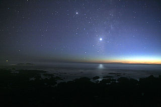
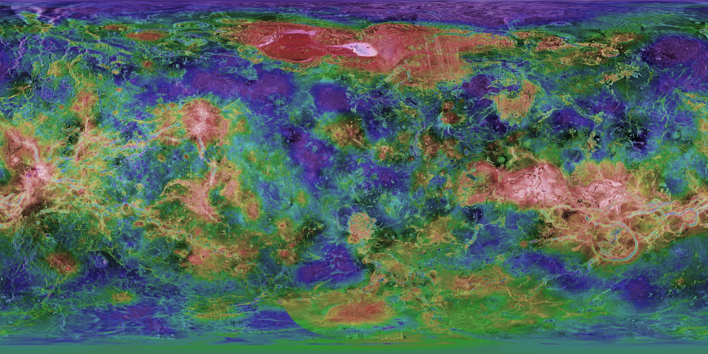
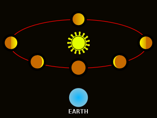
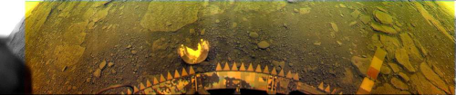

Venus is the second planet from the Sun in the Solar System.
It is slightly smaller than Earth and is often called a "sister" planet of Earth.
It is the brightest of the planets on the Earth sky, caused by the proximity to the Earth and the high albedo of the atmosphere and clouds.
Venus is named after the Roman goddes of love and beauty.
The atmosphere is composed almost entirely of carbon dioxide (96.5%), which heats the planet.
Because of this, the Venusian surface has a higher temperature than Mercury, the closest planet to Sun.
Opaque clouds of sulfuric acid cover the planet.
Venus is shaped by volcanism and craters.
The planet does not feature tectonic plates, but has other tectonic features like tesserae - heavily deformed terrain.
Venus contains three highland regions (terrae) - Aphrodite Terra, Ishtar Terra and Lada Terra.
There are no moons orbiting Venus.
The planet also rotates against it's orbital motion, similar to Uranus.
This makes the planet rotate around it's axis twice a full orbit around the Sun, the slowest of all the planets in the Solar System.

Venus as an evening star (center right). Jupiter is seen in the top. Source
Name
Venus is an inferior planet to Earth, so it can only be seen as a morning or an evening star.
In ancient Greece, the planet was referes to as Phosphorus (Φωσφόρος, "Bringer of Light"), when seen as a morning star, and Hesperus (Ἓσπερος, "Evening star"), when seen as an evening star.
They later identified it as a single planet, which they named "Αφροδίτη" after Aphrodite.
The Romans still used different names for the morning and evening star - Lucifer and Vesper, which are literal translations of the Greek names.
The name Venus was first used in the 13th century.
In Chinese the planet used to be referred to as "the Great White" (Tàibái, 太白) and "the Excellent West One" (Chánggēng, 長庚), for the morning and evening stars respectively.
Later the planet became known as "metal star" (Jīn-xīng, 金星)
Orbit and rotation
Venus orbits the Sun at an average distance of 0.72 AU and completes an orbit every 224.7 days.
The eccentricity of the orbit is 0.01, the closest to a circle of all the planets.
Venus is the slowest rotating planet - one day on Venus is 116 days and 18 hours, and the sidereal day is around 243 days, which is longer than a Venusian year.
It is also rotating in retrograde, the only other planet to do so is Uranus.
This means that on Venus the Sun will rise from the west and set in the east.
There are no natural satellites orbiting Venus.
There are however seven trojans co-orbiting with Venus.
Physical characteristics
Size
Venus is a terrestrial planet like Mercury, Earth and Mars.
The diameter of Venus is 12,103.6 km - only 638.4 km less than Earth's.
Venus's mass is 81.5% that of Earth's.
Because of these similarities, it is sometimes described as Earth's twin planet.
Internal structure
Little is known about the interior of Venus, but the similarities to Earth suggest that the planet has a metal core, a rocky mantle and a crust.
The crust does not feature plate tectonics like Earth.
This is because on hotter surfaces like Venus, weak spots that are caused by internal factors recover before they connect and create plates.
Surface
The surface of Venus is 150 million years old on average.
This makes it relatively new compared to other planets.
This suggests a complete resurfacing of Venus.
Venus contains three highland regions (terrae) - Aphrodite Terra, Ishtar Terra and Lada Terra.
Aphrodite Terra is a continent near the Equator, characterised by fractures.
Ishtar is located near the north Pole, where the highest point - Maxwell Mons - is located.
Lada is a southern region, the smalles of the three.
Other smaller highlands (regio) are scattered across the remaining terrain.
Some examples are Beta Regio and Themis Regio.
Between the highlands are low-lying plains (planitiae).
Structurally, these plains feature numerous ridges, grabens (fossa and linea), fractures, scarps (rupes), troughs, hills (collis), and dikes.
A unique feature for Venus is tessera - heavily deformed terrain.
Tesserae are some of the oldest surfaces on Venus.
Aphrodita Terra, Ishtar Terra, Beta Regio, Phoebe Regio and Alpha Regio are some of the regions where most tesserae are located.

Topographic map of Venus, Magellan
Atmosphere and climate
96.5% of the Venusian atmosphere is composed of carbon dioxide in it's supercritical phase.
The remaining 3.5% are nitrogen.
The thick carbon dioxide atmosphere heats the planet, creating a greenhouse effect.
On average, the temperature is 740 K and the atmosphere is 93 bar.
The planet is shrouded in sulfuric acid.
These clouds make it impossible for observation of the surface without the help of advanced instruments.
Venus's albedo is also high, due to the clouds.
Early observation
The planet is the most prominent in the night sky, appearing as a morning and evening star.
It was known since ancient times and played a large role in those cultures.
The Maya based their calendar partially on Venus.

Venus displays phases similar to the Moon
Galileo Galilei observed the planet through a telescope.
He noticed that Venus was showing phases similar to the Moon, which would prove it's proximity to the Sun.
The atmosphere was discovered by Mikhail Lomonosov.
It was later studied by astronomers Johann Schröter and Chester Smith Lyman, who noticed the crescent shape of Venus to extend and a complete ring forming at inferion conjunction.
This is a result of the scattered sunlight in the atmosphere.
Exploration
Venus was the first planet (other than Earth) visited by spacecrafts.
The first mission was the soviet Venera 1, but it lost communication on its way to the planet.
Mariner 2 was the first spacecraft to successfully reach Venus, flying past it in 1962.
The first to enter the atmosphere was Venera 4, which measured the surface temperature and atmosphere.
The results were different from earlier missions, measuring higher temperatures and denser atmosphere than previously thought.
The Venera program continued with the first soft land (Venera 7), the first photographs of the surface (Venera 9 and 10) and first color photographs (Venera 13 and 14), ending with Venera 15 and 16.
VeGa 1 and 2 were soviet missions, which also studied the Halley comet during it's perihelion.
Other missions have visited the planet, with one still in progress (Akatsuki).
Future NASA missions VERITAS and DAVINCI+ are planned to visit the planet.

Venera 13 color panorama
Habitability
It is unlikely that life exists on Venus, given the extreme temperatures.
However, there is the possibility of microbes to exist thirty miles high in the atmosphere, where temperatures can range between 30 and 70 °C.

{kind=link}